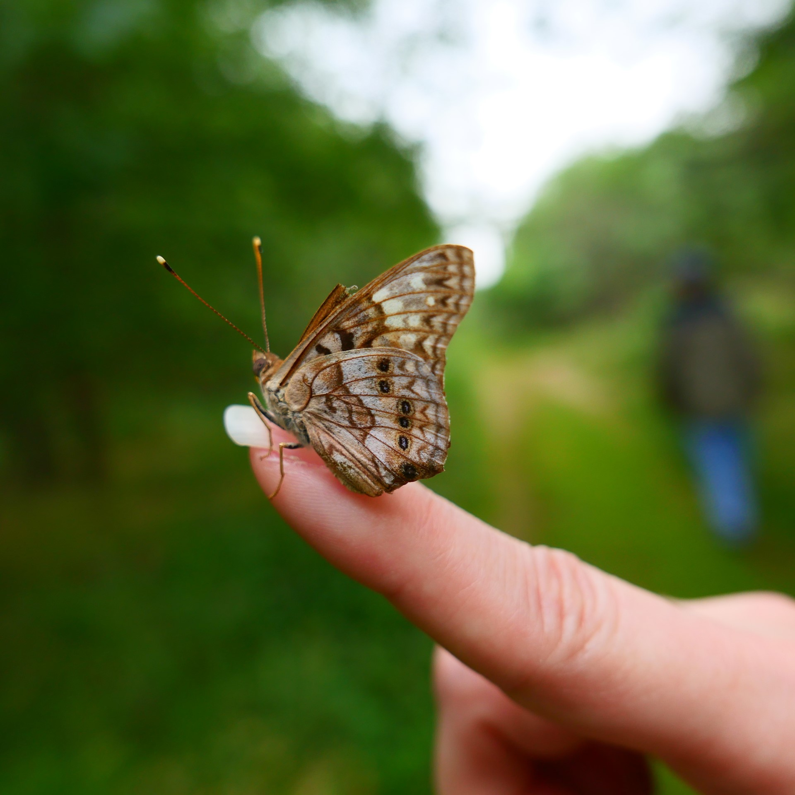
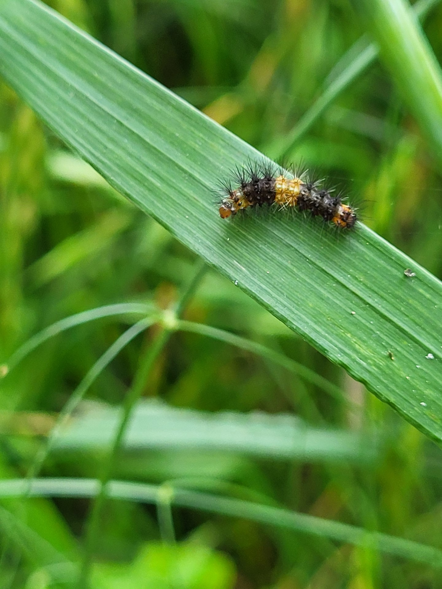

Join us on Saturday April 27th, 2024 for ABF 30th Anniversary Celebration

Fieldtrip Saturday April 27th at 10:00am
Join us on Saturday April 27th, 2024 for ABF 30th Anniversary Celebration

Fieldtrip Saturday April 27th at 10:00am
Join us on Saturday April 27th, 2024 for ABF 30th Anniversary Celebration
Fieldtrip Saturday April 27th at 10:00am
Join us on Saturday April 27th, 2024 for ABF 30th Anniversary Celebration
Fieldtrip Saturday April 27th at 10:00am
Join us on Saturday April 27th, 2024 for ABF 30th Anniversary Celebration
Fieldtrip Saturday April 27th at 10:00am
Fieldtrip and Anniversary Celebration - Saturday April 27th, 2024 at 10:00am
Celebrate Austin Butterfly Forum’s 30th (+1) Anniversary. ABF was formed in 1993 to enrich people's lives through butterfly conservation and public pollinator awareness.
This event is free to attend and open to the public!
Location: Hornsby Bend (Austin Water Center for Environmental Research Auditorium) 2210 South FM 973, Austin, 78725
Parking: You will need a photo ID to enter the Hornsby Bend property. https://www.hornsbybend.org/copy-of-location-guide
Registration: https://forms.gle/msqzrJCZ9Do3tnY49
Contact: 956-332-3746, butterfliesaustin@gmail.com
Plan A (weather permitting)
-10:00am - 10:30/10:45am Introduction and socializing at Auditorium, beverages and light breakfast will be provided
-10:30/10:45am - 12:30pm Butterflying on the trails and checking pollinator-friendly plants with Gary St Clair (Austin Nature & Science Center)
-12:30pm-1pm Raffles for prizes at Auditorium
- ~1:15pm Optional late lunch meetup at Live Oak Brewing (The Black Forest in Austin and Buddy's BBQ & Crepes)
Plan B (indoors only at Auditorium or partially at Auditorium)
- 10:00am- 11am Introduction, socialize and an avid butterflier presents, beverages and light breakfast will be provided
- 11am- 12:30-ish pm Plants, elements of a butterfly garden, and more
- ~1:00pm Optional late lunch meetup at Live Oak Brewing (The Black Forest in Austin and Buddy's BBQ & Crepes)
- We will have raffles for prizes!
facebook group
join our large group discussion on facebook

Monarch Emergence Video by Linda Avitt